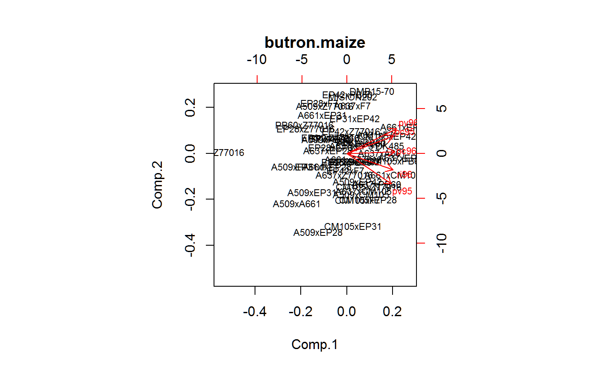

butron.maize.RdMaize yields in a multi-environment trial. Pedigree included.
A data frame with 245 observations on the following 5 variables.
gengenotype
malemale parent
femalefemale parnet
envenvironment
yieldyield, Mg/ha
Ten inbreds were crossed to produce a diallel without reciprocals. The 45 F1 crosses were evaluated along with 4 checks in a triple-lattice 7x7 design. Pink stem borer infestation was natural.
Experiments were performed in 1995 and 1996 at three sites in northwestern Spain: Pontevedra (42 deg 24 min N, 8 deg 38 min W, 20 m over sea), Pontecaldelas (42 deg 23 N, 8 min 32 W, 300 m above sea), Ribadumia (42 deg 30 N, 8 min 46 W, 50 m above sea).
A two-letter location code and the year are concatenated to define the environment.
The average number of larvae per plant in each environment:
| Env | Larvae |
| pc95 | 0.54 |
| pc96 | 0.91 |
| ri96 | 1.78 |
| pv95 | 2.62 |
| pv96 | 3.35 |
Butron, A and Velasco, P and Ord\'as, A and Malvar, RA. 2004. Yield evaluation of maize cultivars across environments with different levels of pink stem borer infestation. Crop science, 44, 741-747. http://doi.org/10.2135/cropsci2004.7410
Used with permission of Ana Butron.
library(agridat) data(butron.maize) dat <- butron.maize libs(reshape2) mat <- acast(dat, gen~env, value.var='yield') mat <- sweep(mat, 2, colMeans(mat)) mat.svd <- svd(mat) # Calculate PC1 and PC2 scores as in Table 4 of Butron # Comment out to keep Rcmd check from choking on '<!-- %*%' --> # round(mat.svd$u[,1:2] <!-- %*% diag(sqrt(mat.svd$d[1:2])) %*% diag(c(-1,1)),3) --> biplot(princomp(mat), main="butron.maize", cex=.7) # Figure 1 of Butronif(0){ # Here we see if including pedigree information is helpful for a # multi-environment model # Including the pedigree provided little benefit # Create the pedigree ped <- dat[, c('gen','male','female')] ped <- ped[!duplicated(ped),] # remove duplicates unip <- unique(c(ped$male, ped$female)) # Unique parents unip <- unip[!is.na(unip)] # We have to define parents at the TOP of the pedigree ped <- rbind(data.frame(gen=c("Dent","Flint"), # genetic groups male=c(0,0), female=c(0,0)), data.frame(gen=c("A509","A637","A661","CM105","EP28", "EP31","EP42","F7","PB60","Z77016"), male=rep(c('Dent','Flint'),each=5), female=rep(c('Dent','Flint'),each=5)), ped) ped[is.na(ped$male),'male'] <- 0 ped[is.na(ped$female),'female'] <- 0 # View the pedigree. Can't use kinship2 ... plants can be both male/female # Not the best view...too much overplotting libs(synbreed) pe <- with(ped[1:57,], create.pedigree(gen, male, female, gener=NULL)) # windows(9,6) synbreed::plot.pedigree(pe, vertex.size=10, vertex.label.cex=.5, asp=.5) # } # ---------------------------------------------------------------------------- if(0){ # asreml3 libs(asreml) ped.ainv <- asreml.Ainverse(ped)$ginv m0 <- asreml(yield ~ 1+env, random = ~ gen, data=dat) m1 <- asreml(yield ~ 1+env, random = ~ ped(gen), ginverse=list(gen=ped.ainv), data=dat) m2 <- update(m1, random = ~ id(env):ped(gen)) m3 <- update(m2, random = ~ diag(env):ped(gen)) m4 <- update(m3, random = ~ fa(env,1):ped(gen)) ## AIC(m0,m1,m2,m3,m4) ## df AIC ## m0 2 229.4037 ## m1 2 213.2487 ## m2 2 290.6156 ## m3 6 296.8061 ## m4 11 218.1568 p0 <- predict(m0, data=dat, classify="gen")$pred$pvals p4 <- predict(m4, data=dat, classify="gen")$pred$pvals p4par <- p4[1:12,] # parents p4 <- p4[-c(1:12),] # hybrids # Careful! Need to manually sort the predictions p0 <- p0[order(as.character(p0$gen)),] p4 <- p4[order(as.character(p4$gen)),] # lims <- range(c(p0$pred, p4$pred)) * c(.95,1.05) lims <- c(6,8.25) # zoom in on the higher-yielding hybrids plot(p0$predicted.value, p4$predicted.value, pch="", xlim=lims, ylim=lims, main="butron.maize", xlab="BLUP w/o pedigree", ylab="BLUP with pedigree") abline(0,1,col="lightgray") text(x=p0$predicted.value, y=p4$predicted.value, p0$gen, cex=.5, srt=-45) text(x=min(lims), y=p4par$predicted.value, p4par$gen, cex=.5) } # ---------------------------------------------------------------------------- if(0){ ## libs(asreml4) ## ped.ainv <- ainverse(ped) ## if(FALSE){ ## # asreml4 does not use ginverse ## m0 <- asreml(yield ~ 1+env, data=dat, random = ~ gen) ## m1 <- asreml(yield ~ 1+env, random = ~ ped(gen), ginverse=list(gen=ped.ainv), data=dat) ## m2 <- update(m1, random = ~ id(env):ped(gen)) ## m3 <- update(m2, random = ~ diag(env):ped(gen)) ## m4 <- update(m3, random = ~ fa(env,1):ped(gen)) ## ## AIC(m0,m1,m2,m3,m4) ## ## df AIC ## ## m0 2 229.4037 ## ## m1 2 213.2487 ## ## m2 2 290.6156 ## ## m3 6 296.8061 ## ## m4 11 218.1568 ## p0 <- predict(m0, data=dat, classify="gen")$pred$pvals ## p4 <- predict(m4, data=dat, classify="gen")$pred$pvals ## p4par <- p4[1:12,] # parents ## p4 <- p4[-c(1:12),] # hybrids ## # Careful! Need to manually sort the predictions ## p0 <- p0[order(as.character(p0$gen)),] ## p4 <- p4[order(as.character(p4$gen)),] ## # lims <- range(c(p0$pred, p4$pred)) * c(.95,1.05) ## lims <- c(6,8.25) # zoom in on the higher-yielding hybrids ## plot(p0$predicted.value, p4$predicted.value, ## pch="", xlim=lims, ylim=lims, main="butron.maize", ## xlab="BLUP w/o pedigree", ylab="BLUP with pedigree") ## abline(0,1,col="lightgray") ## text(x=p0$predicted.value, y=p4$predicted.value, p0$gen, cex=.5, srt=-45) ## text(x=min(lims), y=p4par$predicted.value, p4par$gen, cex=.5) ## # Including the pedigree provided little benefit ## } # if(FALSE) }